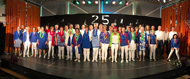

<div class="event-info">
	<div>
		<div class="img-wrap">
	
		</div>
		<div class="songs">
			<p>Hier</p>
			<p>Komen</p>
			<p>De</p>
			<p>Songs</p>
			<p>Te</p>
			<p>Staan</p>
		</div>
		<div class="content-wrap">
    <p><strong>Popkoor Popcorn uit Heerhugowaard</strong></p>
	<p>Bij het maken van popcorn denk je aan geelligheid, beweging, actie, zout of zoet...<br/>
Allemaal trefwoorden die ook van toepassing zijn op Popkoor Popcorn.</p>
	<p>Het koor brengt een afwisselend repertoire aan popliedjes begeleid door Stefan Broersen op de piano.</p>
	<p>&nbsp;</p>
	<p>Dirigent: Rens Boerke</p>
	<p>&nbsp;</p>
	<p><a href="https://popkoorpopcorn.nl" target="_blank">https://popkoorpopcorn.nl</a></p>
		</div>
	</div>
</div>
